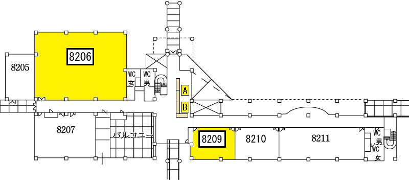

●展示場所マップ

●活動内容
電気電子メカ工作の話題でわいわいと楽しむ会です。
ほぼ定期的に開催される交流会・勉強会で、参加者それぞれで興味のある分野について、作品を製作したり、交流したりします。
これまでに、LEDチカチカ、電気めっき、テクノ手芸、ライントレースカー、といった話題で製作企画を行いました。
ロボット・電子音源・リフローマシン・マイコンボードなどの自作をしている方も参加しています。
参加者のなかでよく使われるマイコン・マイコンボードは、Arduino・AVR・PIC・mbed・RaspberryPi、propellerあたりです。
今回の目玉は、みんなのラズパイコンテストでハルロック賞を受賞した「SPAMサーバ」の展示です。
●サイト等
Site
今回の展示ではノンコーディング（プログラミングなし）で初音ミクを踊らせる方法の解説と、インターネット上に公開されているいくつかのデモンストレーションプログラムを体験していただくことができます。
●活動内容
弊社で取り扱っているオープンソースハードウェアの紹介・販売を行います。
小型の3DプリンタAFINIA H480の展示やArduinoを用いた作例も展示致します。
●サイト等
Site
●活動内容
だいたい月１回ぐらい集まって情報交換を行っています。
またもくもくとUnityをつかってコード書いたり三次元モデルを動かしたりしています。
Unity初心者の方や、集中してやりたい方、俺がUnityだ！という方まで、幅広く募集してます！
わからない事があれば気軽に聞ける雰囲気を目指してますので、お気軽にご参加ください。
●サイト等
Site ｜ Doorkeeper